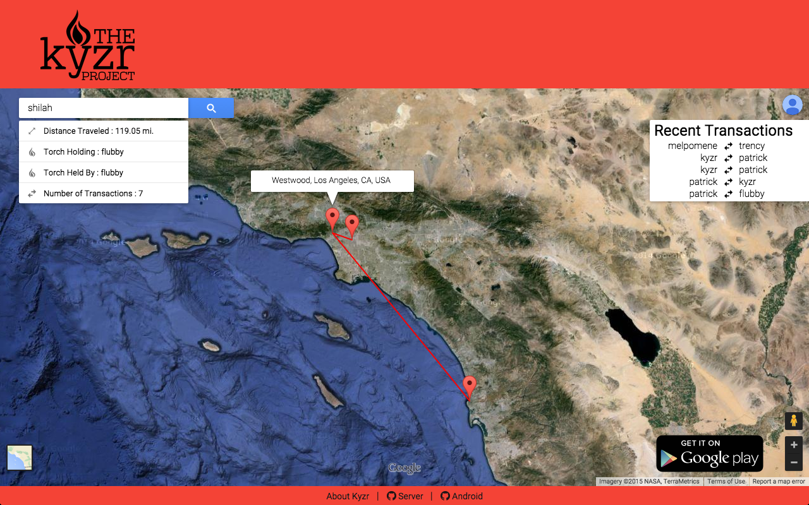

What is Kyzr?
Kyzr is a virtual torch-passing application that aims to create a global interconnected community around the adventure of meeting like-minded travelers and watching a piece of your identity travel around the world.
Our Story
Our project is all about buzzwords. A full-stack implementation of an Android-interfacing application, with industrial grade database software and a software stack that represents how projects are done in the real world. From the beginning we wanted this project to be implemented like an actual application such as Twitter or Facebook. We also wanted to emulate how they do it, and we used (mostly) good git practices such as pull requests and branches, and used an Agile workflow using Trello.
Over time, our project evolved into something we actually cared about. As we continued development, we became more excited by the features that we could add. Through design reviews, we came up with ideas of adding features such as usernames and torch statistics. We also ideated a lot on the User Interface of both the website and the Android app. The combination of these features and updated UI turned the project from something that was simply a class project into something that we were really excited about.
Below is an early representation of our website UI:
After a lot of updating on the UI, our website now looks like this:

As we became more excited, we began implementing more features, as seen through our git commits. The top graph represents the github repository associated with the Android app and the bottom graph represents our server.

How it Works
Implementation information
1. Two NFC-equipped Android phones with Kyzr installed bump each other
2. User 1 taps their screen to swap torches with User 2
3. User 2’s phone now holds its original ID and User 1’s ID
4. User 2’s phone contacts the server, which tells the database that these two phones have switched IDs
5. The server also adds information to each user’s database entry about the transaction such as latitude and longitude
6. User 1 and 2 go to the website and enter their IDs (or usernames!)
7. The server retrieves all of their transactions from the database, and displays it on a map along with statistics about each user’s torch!
On the Server Side
Our server is a full-stack implementation of a LAMP server setup. We are running Debian 7, Apache server, Mongodb and python-Flask.
For mapping the travel of the torch we are using Google Maps API, with on-the-fly javascript creation.
Updating the database is done via POST requests.
Attributions and External Resources
pyMongo
Mongodb
python-Flask
Apache2-server
Google maps API
Google styling (material)
Floating Action Button Library
Class Resources
Documents
The Project Proposal | Design Review 1 | Design Review 1 FeedbackSprint Schedule
- Sprint 1 - 4/1
- Sprint 2 - 4/8
- Sprint 3 - 4/15
- Sprint 4 - 4/22
- Sprint 5 - 4/29